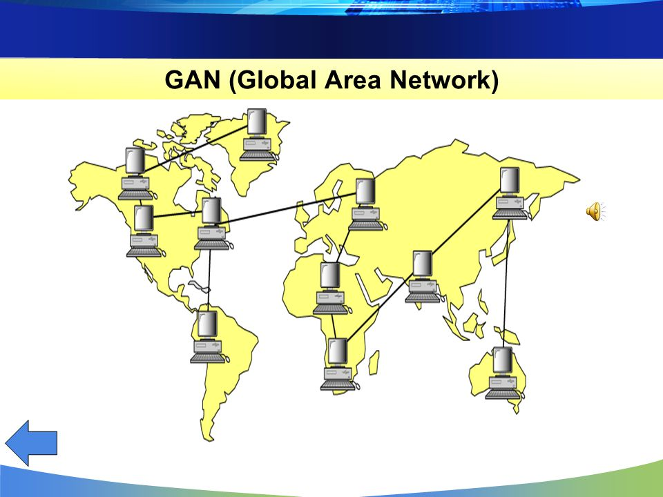

GAN(Globe Area Network) — глобальная зональная сеть. Главным примером сети GAN является интернет. Однако GAN не ограничивается интернетом, к GAN также относятся закрытые сети, которыми владеют крупные мировые компании. Это помогает соединить в систему устройства находящиеся в разных странах
